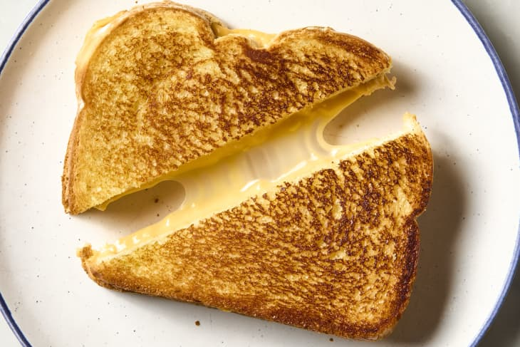

Grilled cheese

Description
A tasty melted cheese sandwhich.
Ingredients
- Butter
- Sliced bread
- American cheese (or your favorite meltable cheese)
Steps
- Heat up a pan on low-medium heat.
- Once your pan has warmed up, butter the pan by adding a teaspoon of butter.
- On a plate assemble your sandwhich, putting your cheese in between two slices of bread.
- Add your sandwhich to the pan and let cook until the bread in a golden brown, then flip the it over and cook the other side.
- Cook until the cheese has melted and the bread is golden brown.